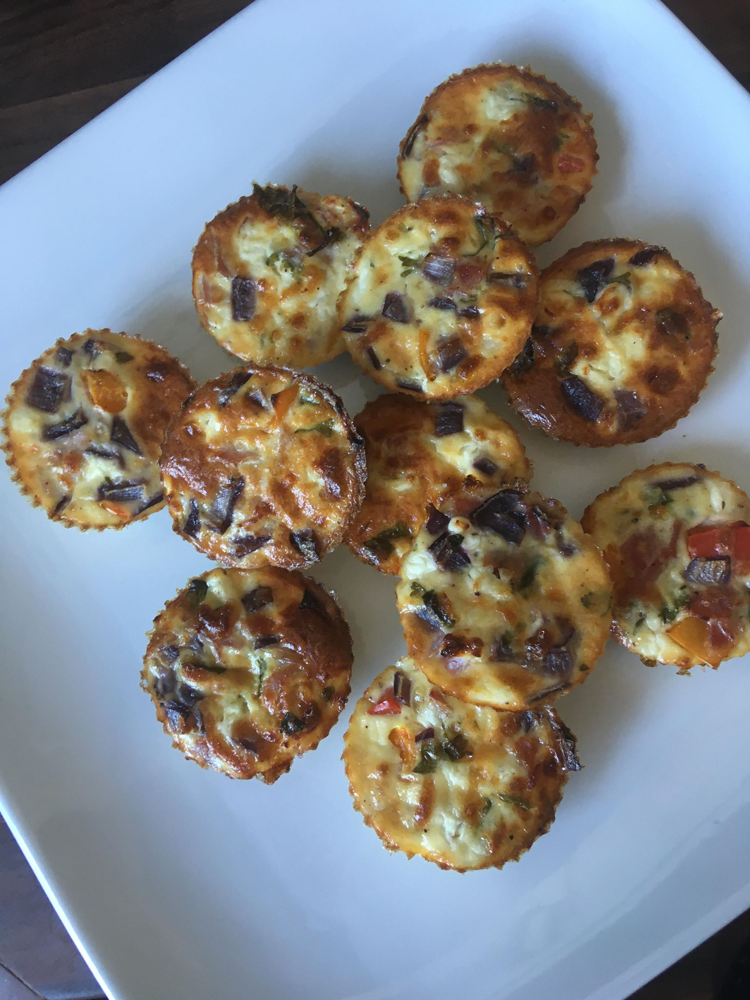
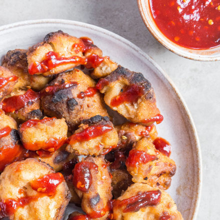
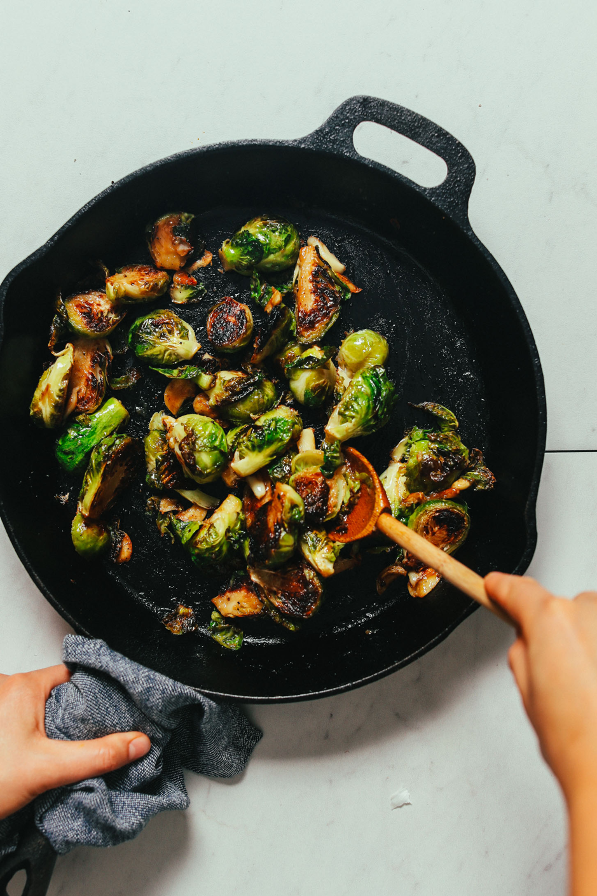

Here are some healthy recipes to go with your work outs.
Egg Muffins
Ingredients
300g fat free cottage cheese
4 eggs
40g grated cheddar cheese
Fresh or dried herbs (e.g. parsley)
1 cal spray fry light (oil)

Method
Spray 12 small cilicone cake cases with fry light
Whisk 4 eggs then add the cottage cheese and grated cheddar and any herbs or spices you like. This is the basic mix, you can then add whatever you fancy such as peppers, tomatoes etc. a great way to use up extra vegtables in the frige.
Spoon equally in to silicone cases and bake in medium heat for approximately 40 minutes
Can be eaten hot or cold! When cooled keep in the friedge for a couple of days
Bang Bang Cauliflower With Sweet & Spicy Sauce
Ingredients
Cauliflower
Olive Oil
For the Batter
300ml almond milk
200g brown rice flour
For the Coating
200g brown rice flour
2 teaspoons paprika
1 teaspoon ground cumin
Pinch of salt
For the Sauce
4 tablespoons brown rice syrup
4 tablespoons tomatoe puree
1/2 lemon juice
2 teaspons hot chilli powder
1/2 teaspoon caynenne pepper
Pinch of salt and pepper

Method
Preheat oven to 200.C (fan setting)
Mix the batter ingredients in a large mixing bowl.
In a separate bowl, mix the coating ingredients.
Dip the cauliflower florets into the batter, before rolling in the coating, ensuring each floret is fully covered.
Place the florets on a baking tray and roast for 25 minutes.
Remove the tray from the oven and drizzle the cauliflower with olive oil, before placing back in for a final 5 minutes to crisp up.
While this cooks, make the sauce by simply placing all of the ingredients into a small bowl and stirring until smooth.
Once the cauliflower is cooked and crunchy, take it out of the oven and serve with the sweet & spicy sauce.
Miso Glazed Roasted Brussel Sprouts
Ingredients
For the Sprouts
5 cups Brussels sprouts, browned outer leaves removed, large stalks trimmed off, halved (quartered if very large in size // 1 lb yields ~5 cups)
2 tsp avocado oil (or other neutral-flavored cooking fat that can withstand high heat)
3/4 tsp sea salt, plus more to taste
1/4 tsp fresh black pepper
5 whole cloves garlic, skin removed and smashed or halved
For the Miso Glaze
1 Tbsp miso paste (we prefer chickpea miso for a soy-free option — Miso Master is a great brand // always ensure gluten-free friendly as needed)
2 Tbsp rice vinegar (or sub apple cider or white wine vinegar)
1 Tbsp maple syrup
1 pinch sea salt
For Cooking
2 Tbsp avocado oil (or other neutral-flavored cooking fat that can withstand high heat)

Method
Preheat oven to 400 degrees F (204 C).
Add trimmed and halved Brussels sprouts to a large mixing bowl (reserve garlic cloves for later use) and season with oil, salt, and pepper. Toss to coat and set aside.
In a separate small mixing bowl, add the miso glaze ingredients and stir / whisk to combine. Taste and adjust flavor as needed, adding more salt or miso for saltiness, vinegar for acidity, or maple syrup for sweetness. It should be equal parts tangy, salty, and sweet. Set aside for later use.
Heat a large (at least 12-inch) oven-safe skillet (we prefer cast iron) over medium-high heat. Once hot, add cooking oil (it should coat the bottom of the pan, so add more as needed). Wait 1 minute for the oil to heat, then add Brussels sprouts (NOT THE GLAZE — we’ll use that later). Make sure the pan is not crowded — all sprouts should have room to lie face down and they shouldn’t be piled on top of each other. If it’s crowded, remove a few to cook in a separate batch.
Cook for 2-3 minutes cut side down to get a sear. Once golden brown, add garlic, toss, and transfer to oven.
Bake for 10-15 minutes, removing from the oven every 5 minutes to toss and inspect the sprouts. You want them crispy and deep golden brown but not burnt.
Remove from oven and immediately add HALF the miso glaze (alternatively, reserve all as a dipping sauce). Toss to coat and serve hot with remaining glaze on the side for dipping.
Best when fresh. Store cooled leftovers covered in the refrigerator up to 2-3 days. Not freezer friendly. Reheat in the microwave or on the stovetop in a skillet over medium heat until hot